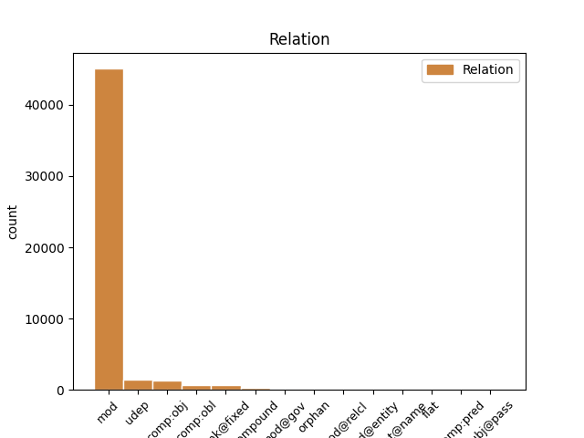
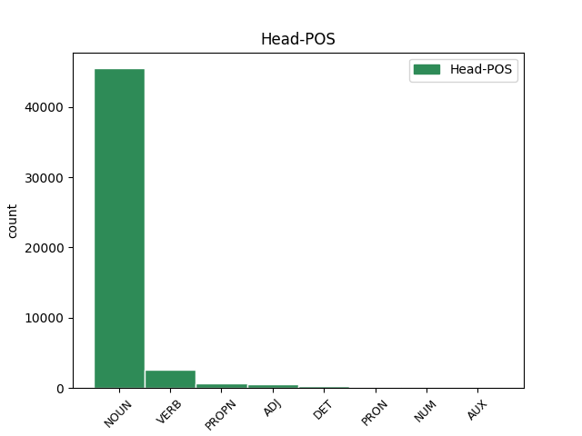
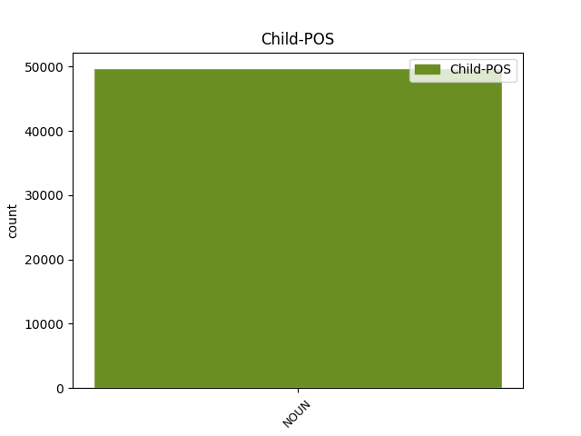

Distribution of features within this leaf



Agreement Rules sorted by frequency.
- When the dependent token is the modifer(mod) of the head token, and the head token is NOUN and the dependent token is NOUN.
1 - _ _ _ _ 0 _ _ _
2 Здравствуй _ _ _ _ 0 _ _ _
3 , _ _ _ _ 0 _ _ _
4 - _ _ _ _ 0 _ _ _
5 сказал _ _ _ _ 0 _ _ _
6 он _ _ _ _ 0 _ _ _
7 , _ _ _ _ 0 _ _ _
8 обернувшись _ _ _ _ 0 _ _ _
9 и _ _ _ _ 0 _ _ _
10 доброжелательно _ _ _ _ 0 _ _ _
11 глядя _ _ _ _ 0 _ _ _
12 на _ _ _ _ 0 _ _ _
13 меня _ _ _ _ 0 _ _ _
14 большими _ _ _ _ 0 _ _ _
15 коричневыми _ _ _ _ 0 _ _ _
16 глазами _ _ _ _ 0 _ _ _
17 из-за _ _ _ _ 0 _ _ _
18 круглых _ _ _ _ 0 _ _ _
19 плоских _ _ _ _ 0 _ _ _
20 стекол стекло NOUN _ Animacy=Inan|Case=Gen|Gender=Neut|Number=Plur 0 _ _ _
21 оконной _ _ _ _ 0 _ _ _
22 прозрачности прозрачность NOUN _ Animacy=Inan|Case=Gen|Gender=Fem|Number=Sing 20 mod _ SpaceAfter=No
23 . _ _ _ _ 0 _ _ _
1 На _ _ _ _ 0 _ _ _
2 этом _ _ _ _ 0 _ _ _
3 пути _ _ _ _ 0 _ _ _
4 уже _ _ _ _ 0 _ _ _
5 сделан _ _ _ _ 0 _ _ _
6 первый _ _ _ _ 0 _ _ _
7 шаг _ _ _ _ 0 _ _ _
8 - _ _ _ _ 0 _ _ _
9 это _ _ _ _ 0 _ _ _
10 интересная _ _ _ _ 0 _ _ _
11 инициатива _ _ _ _ 0 _ _ _
12 по _ _ _ _ 0 _ _ _
13 созданию _ _ _ _ 0 _ _ _
14 Ассоциации Ассоциация PROPN _ Animacy=Inan|Case=Gen|Gender=Fem|Number=Sing 0 _ _ _
15 молодых _ _ _ _ 0 _ _ _
16 историков историк NOUN _ Animacy=Anim|Case=Gen|Gender=Masc|Number=Plur 14 mod _ _
17 под _ _ _ _ 0 _ _ _
18 эгидой _ _ _ _ 0 _ _ _
19 ЦК _ _ _ _ 0 _ _ _
20 ВЛКСМ _ _ _ _ 0 _ _ _
21 , _ _ _ _ 0 _ _ _
22 которая _ _ _ _ 0 _ _ _
23 требует _ _ _ _ 0 _ _ _
24 всяческой _ _ _ _ 0 _ _ _
25 поддержки _ _ _ _ 0 _ _ _
26 . _ _ _ _ 0 _ _ _
1 Видимо _ _ _ _ 0 _ _ _
2 , _ _ _ _ 0 _ _ _
3 это _ _ _ _ 0 _ _ _
4 вопрос _ _ _ _ 0 _ _ _
5 в _ _ _ _ 0 _ _ _
6 первую первый ADJ _ Animacy=Inan|Case=Acc|Gender=Fem|Number=Sing 0 _ _ _
7 очередь очередь NOUN _ Animacy=Inan|Case=Acc|Gender=Fem|Number=Sing 6 unk@fixed _ _
8 кадровый _ _ _ _ 0 _ _ _
9 - _ _ _ _ 0 _ _ _
10 ведь _ _ _ _ 0 _ _ _
11 существует _ _ _ _ 0 _ _ _
12 , _ _ _ _ 0 _ _ _
13 как _ _ _ _ 0 _ _ _
14 вы _ _ _ _ 0 _ _ _
15 сказали _ _ _ _ 0 _ _ _
16 , _ _ _ _ 0 _ _ _
17 значительный _ _ _ _ 0 _ _ _
18 слой _ _ _ _ 0 _ _ _
19 людей _ _ _ _ 0 _ _ _
20 , _ _ _ _ 0 _ _ _
21 которым _ _ _ _ 0 _ _ _
22 эти _ _ _ _ 0 _ _ _
23 методы _ _ _ _ 0 _ _ _
24 выгодны _ _ _ _ 0 _ _ _
25 ? _ _ _ _ 0 _ _ _
1 Сколько _ _ _ _ 0 _ _ _
2 минуло _ _ _ _ 0 _ _ _
3 лет _ _ _ _ 0 _ _ _
4 , _ _ _ _ 0 _ _ _
5 а _ _ _ _ 0 _ _ _
6 мне _ _ _ _ 0 _ _ _
7 до _ _ _ _ 0 _ _ _
8 сих сей DET _ Case=Gen|Number=Plur 0 _ _ _
9 пор пора NOUN _ Animacy=Inan|Case=Gen|Gender=Fem|Number=Plur 8 unk@fixed _ _
10 снятся _ _ _ _ 0 _ _ _
11 его _ _ _ _ 0 _ _ _
12 пестрота _ _ _ _ 0 _ _ _
13 и _ _ _ _ 0 _ _ _
14 шум _ _ _ _ 0 _ _ _
15 , _ _ _ _ 0 _ _ _
16 его _ _ _ _ 0 _ _ _
17 снедь _ _ _ _ 0 _ _ _
18 и _ _ _ _ 0 _ _ _
19 сытые _ _ _ _ 0 _ _ _
20 запахи _ _ _ _ 0 _ _ _
21 , _ _ _ _ 0 _ _ _
22 теплая _ _ _ _ 0 _ _ _
23 , _ _ _ _ 0 _ _ _
24 вязкая _ _ _ _ 0 _ _ _
25 смолка _ _ _ _ 0 _ _ _
26 , _ _ _ _ 0 _ _ _
27 кедровая _ _ _ _ 0 _ _ _
28 халва _ _ _ _ 0 _ _ _
29 и _ _ _ _ 0 _ _ _
30 золотые _ _ _ _ 0 _ _ _
31 глаза _ _ _ _ 0 _ _ _
32 женщины _ _ _ _ 0 _ _ _
33 . _ _ _ _ 0 _ _ _
1 Возле _ _ _ _ 0 _ _ _
2 поселка _ _ _ _ 0 _ _ _
3 находился _ _ _ _ 0 _ _ _
4 санаторий _ _ _ _ 0 _ _ _
5 , _ _ _ _ 0 _ _ _
6 там _ _ _ _ 0 _ _ _
7 шло _ _ _ _ 0 _ _ _
8 строительство _ _ _ _ 0 _ _ _
9 и _ _ _ _ 0 _ _ _
10 была _ _ _ _ 0 _ _ _
11 нужда _ _ _ _ 0 _ _ _
12 в _ _ _ _ 0 _ _ _
13 главном _ _ _ _ 0 _ _ _
14 инженере _ _ _ _ 0 _ _ _
15 ; _ _ _ _ 0 _ _ _
16 под _ _ _ _ 0 _ _ _
17 боком _ _ _ _ 0 _ _ _
18 располагалась _ _ _ _ 0 _ _ _
19 отличная _ _ _ _ 0 _ _ _
20 школа школа NOUN _ Animacy=Inan|Case=Nom|Gender=Fem|Number=Sing 0 _ _ _
21 - _ _ _ _ 0 _ _ _
22 десятилетка десятилетка NOUN _ Animacy=Inan|Case=Nom|Gender=Fem|Number=Sing 20 compound _ SpaceAfter=No
23 , _ _ _ _ 0 _ _ _
24 где _ _ _ _ 0 _ _ _
25 как _ _ _ _ 0 _ _ _
26 раз _ _ _ _ 0 _ _ _
27 нужен _ _ _ _ 0 _ _ _
28 был _ _ _ _ 0 _ _ _
29 преподаватель _ _ _ _ 0 _ _ _
30 английского _ _ _ _ 0 _ _ _
31 языка _ _ _ _ 0 _ _ _
32 , _ _ _ _ 0 _ _ _
33 а _ _ _ _ 0 _ _ _
34 жена _ _ _ _ 0 _ _ _
35 Павлова _ _ _ _ 0 _ _ _
36 занималась _ _ _ _ 0 _ _ _
37 техническими _ _ _ _ 0 _ _ _
38 переводами _ _ _ _ 0 _ _ _
39 с _ _ _ _ 0 _ _ _
40 английского _ _ _ _ 0 _ _ _
41 . _ _ _ _ 0 _ _ _
1 Он _ _ _ _ 0 _ _ _
2 осторожно _ _ _ _ 0 _ _ _
3 , _ _ _ _ 0 _ _ _
4 за _ _ _ _ 0 _ _ _
5 дужку _ _ _ _ 0 _ _ _
6 , _ _ _ _ 0 _ _ _
7 снял _ _ _ _ 0 _ _ _
8 очки _ _ _ _ 0 _ _ _
9 , _ _ _ _ 0 _ _ _
10 ему _ _ _ _ 0 _ _ _
11 хотелось _ _ _ _ 0 _ _ _
12 получше _ _ _ _ 0 _ _ _
13 рассмотреть _ _ _ _ 0 _ _ _
14 человека _ _ _ _ 0 _ _ _
15 , _ _ _ _ 0 _ _ _
16 задающего задавать VERB _ Animacy=Anim|Aspect=Imp|Case=Acc|Gender=Masc|Number=Sing|Tense=Pres|VerbForm=Part|Voice=Act 0 _ _ _
17 такие _ _ _ _ 0 _ _ _
18 несуразные _ _ _ _ 0 _ _ _
19 вопросы вопрос NOUN _ Animacy=Inan|Case=Acc|Gender=Masc|Number=Plur 16 comp:obj _ SpaceAfter=No
20 , _ _ _ _ 0 _ _ _
21 а _ _ _ _ 0 _ _ _
22 припылившиеся _ _ _ _ 0 _ _ _
23 стекла _ _ _ _ 0 _ _ _
24 только _ _ _ _ 0 _ _ _
25 мешали _ _ _ _ 0 _ _ _
26 . _ _ _ _ 0 _ _ _
1 Затем _ _ _ _ 0 _ _ _
2 я _ _ _ _ 0 _ _ _
3 потащил _ _ _ _ 0 _ _ _
4 какое-то _ _ _ _ 0 _ _ _
5 длинное _ _ _ _ 0 _ _ _
6 растение _ _ _ _ 0 _ _ _
7 с _ _ _ _ 0 _ _ _
8 сухими _ _ _ _ 0 _ _ _
9 темными _ _ _ _ 0 _ _ _
10 коробочками _ _ _ _ 0 _ _ _
11 семенников _ _ _ _ 0 _ _ _
12 , _ _ _ _ 0 _ _ _
13 будто _ _ _ _ 0 _ _ _
14 наполненными наполнить VERB _ Aspect=Perf|Case=Ins|Number=Plur|Tense=Past|VerbForm=Part|Voice=Pass 0 _ _ _
15 ватой вата NOUN _ Animacy=Inan|Case=Ins|Gender=Fem|Number=Sing 14 udep _ SpaceAfter=No
16 . _ _ _ _ 0 _ _ _
1 Норма _ _ _ _ 0 _ _ _
2 избирателей _ _ _ _ 0 _ _ _
3 на _ _ _ _ 0 _ _ _
4 один _ _ _ _ 0 _ _ _
5 территориальный _ _ _ _ 0 _ _ _
6 округ _ _ _ _ 0 _ _ _
7 дана _ _ _ _ 0 _ _ _
8 из _ _ _ _ 0 _ _ _
9 расчета _ _ _ _ 0 _ _ _
10 257,3 _ _ _ _ 0 _ _ _
11 тысячи тысяча NOUN _ Animacy=Inan|Case=Gen|Gender=Fem|Number=Sing 12 mod@gov _ _
12 человек человек NOUN _ Animacy=Anim|Case=Gen|Gender=Masc|Number=Plur 0 _ _ _
13 . _ _ _ _ 0 _ _ _
1 Так _ _ _ _ 0 _ _ _
2 Дума _ _ _ _ 0 _ _ _
3 Народного _ _ _ _ 0 _ _ _
4 фронта _ _ _ _ 0 _ _ _
5 Латвии _ _ _ _ 0 _ _ _
6 недавно _ _ _ _ 0 _ _ _
7 одобрила _ _ _ _ 0 _ _ _
8 обращение _ _ _ _ 0 _ _ _
9 своего _ _ _ _ 0 _ _ _
10 правления _ _ _ _ 0 _ _ _
11 , _ _ _ _ 0 _ _ _
12 предложившего _ _ _ _ 0 _ _ _
13 членам _ _ _ _ 0 _ _ _
14 фронта _ _ _ _ 0 _ _ _
15 обсудить _ _ _ _ 0 _ _ _
16 целесообразность _ _ _ _ 0 _ _ _
17 начала _ _ _ _ 0 _ _ _
18 борьбы _ _ _ _ 0 _ _ _
19 за _ _ _ _ 0 _ _ _
20 политическую _ _ _ _ 0 _ _ _
21 и _ _ _ _ 0 _ _ _
22 экономическую _ _ _ _ 0 _ _ _
23 независимость _ _ _ _ 0 _ _ _
24 Латвии _ _ _ _ 0 _ _ _
25 , _ _ _ _ 0 _ _ _
26 т. то PRON _ Animacy=Inan|Case=Nom|Gender=Neut|Number=Sing 0 _ _ _
27 е. _ _ _ _ 0 _ _ _
28 достижение достижение NOUN _ Animacy=Inan|Case=Nom|Gender=Neut|Number=Sing 26 comp:obj _ _
29 ее _ _ _ _ 0 _ _ _
30 суверенитета _ _ _ _ 0 _ _ _
31 за _ _ _ _ 0 _ _ _
32 рамками _ _ _ _ 0 _ _ _
33 государственности _ _ _ _ 0 _ _ _
34 СССР _ _ _ _ 0 _ _ _
35 . _ _ _ _ 0 _ _ _
1 Вот _ _ _ _ 0 _ _ _
2 стал _ _ _ _ 0 _ _ _
3 председателем _ _ _ _ 0 _ _ _
4 республиканского _ _ _ _ 0 _ _ _
5 комитета комитет NOUN _ Animacy=Inan|Case=Gen|Gender=Masc|Number=Sing 0 _ _ _
6 народного _ _ _ _ 0 _ _ _
7 контроля контроль NOUN _ Animacy=Inan|Case=Gen|Gender=Masc|Number=Sing 5 comp:obl _ SpaceAfter=No
8 . _ _ _ _ 0 _ _ _
1 Это _ _ _ _ 0 _ _ _
2 случилось _ _ _ _ 0 _ _ _
3 восьмого восьмой ADJ _ Case=Gen|Degree=Pos|Gender=Neut|Number=Sing 0 _ _ _
4 февраля февраль NOUN _ Animacy=Inan|Case=Gen|Gender=Masc|Number=Sing 3 mod _ _
5 1928 _ _ _ _ 0 _ _ _
6 года _ _ _ _ 0 _ _ _
7 , _ _ _ _ 0 _ _ _
8 через _ _ _ _ 0 _ _ _
9 два _ _ _ _ 0 _ _ _
10 дня _ _ _ _ 0 _ _ _
11 после _ _ _ _ 0 _ _ _
12 маминых _ _ _ _ 0 _ _ _
13 именин _ _ _ _ 0 _ _ _
14 , _ _ _ _ 0 _ _ _
15 когда _ _ _ _ 0 _ _ _
16 у _ _ _ _ 0 _ _ _
17 нас _ _ _ _ 0 _ _ _
18 были _ _ _ _ 0 _ _ _
19 блины _ _ _ _ 0 _ _ _
20 и _ _ _ _ 0 _ _ _
21 множество _ _ _ _ 0 _ _ _
22 гостей _ _ _ _ 0 _ _ _
23 . _ _ _ _ 0 _ _ _
1 Основной _ _ _ _ 0 _ _ _
2 причиной _ _ _ _ 0 _ _ _
3 такого _ _ _ _ 0 _ _ _
4 процесса _ _ _ _ 0 _ _ _
5 , _ _ _ _ 0 _ _ _
6 по _ _ _ _ 0 _ _ _
7 мнению _ _ _ _ 0 _ _ _
8 составителей _ _ _ _ 0 _ _ _
9 отчета _ _ _ _ 0 _ _ _
10 , _ _ _ _ 0 _ _ _
11 становится _ _ _ _ 0 _ _ _
12 " _ _ _ _ 0 _ _ _
13 давление _ _ _ _ 0 _ _ _
14 , _ _ _ _ 0 _ _ _
15 оказываемое _ _ _ _ 0 _ _ _
16 наиболее _ _ _ _ 0 _ _ _
17 распространенными _ _ _ _ 0 _ _ _
18 в _ _ _ _ 0 _ _ _
19 мире _ _ _ _ 0 _ _ _
20 языками _ _ _ _ 0 _ _ _
21 " _ _ _ _ 0 _ _ _
22 - _ _ _ _ 0 _ _ _
23 английским _ _ _ _ 0 _ _ _
24 , _ _ _ _ 0 _ _ _
25 французским _ _ _ _ 0 _ _ _
26 , _ _ _ _ 0 _ _ _
27 испанским _ _ _ _ 0 _ _ _
28 , _ _ _ _ 0 _ _ _
29 русским _ _ _ _ 0 _ _ _
30 и _ _ _ _ 0 _ _ _
31 главным _ _ _ _ 0 _ _ _
32 образом образ NOUN _ Animacy=Inan|Case=Ins|Gender=Masc|Number=Sing 33 udep _ _
33 китайским китайский ADJ _ Case=Ins|Degree=Pos|Gender=Masc|Number=Sing 0 _ _ _
34 . _ _ _ _ 0 _ _ _
1 Нет _ _ _ _ 0 _ _ _
2 и _ _ _ _ 0 _ _ _
3 не _ _ _ _ 0 _ _ _
4 было _ _ _ _ 0 _ _ _
5 на _ _ _ _ 0 _ _ _
6 свете _ _ _ _ 0 _ _ _
7 человека _ _ _ _ 0 _ _ _
8 , _ _ _ _ 0 _ _ _
9 столь _ _ _ _ 0 _ _ _
10 лишенного лишить VERB _ Aspect=Perf|Case=Gen|Gender=Masc|Number=Sing|Tense=Past|VerbForm=Part|Voice=Pass 0 _ _ _
11 делового _ _ _ _ 0 _ _ _
12 умения умение NOUN _ Animacy=Inan|Case=Gen|Gender=Neut|Number=Sing 10 comp:obl _ SpaceAfter=No
13 , _ _ _ _ 0 _ _ _
14 как _ _ _ _ 0 _ _ _
15 отец _ _ _ _ 0 _ _ _
16 . _ _ _ _ 0 _ _ _
1 Нашу _ _ _ _ 0 _ _ _
2 власть _ _ _ _ 0 _ _ _
3 больше _ _ _ _ 0 _ _ _
4 нельзя _ _ _ _ 0 _ _ _
5 легитимировать _ _ _ _ 0 _ _ _
6 ничем ничто PRON _ Case=Ins 0 _ _ _
7 , _ _ _ _ 0 _ _ _
8 кроме _ _ _ _ 0 _ _ _
9 как _ _ _ _ 0 _ _ _
10 голосом голос NOUN _ Animacy=Inan|Case=Ins|Gender=Masc|Number=Sing 6 mod _ _
11 этих _ _ _ _ 0 _ _ _
12 обыкновенных _ _ _ _ 0 _ _ _
13 людей _ _ _ _ 0 _ _ _
14 , _ _ _ _ 0 _ _ _
15 руководствующихся _ _ _ _ 0 _ _ _
16 как _ _ _ _ 0 _ _ _
17 своими _ _ _ _ 0 _ _ _
18 заблуждениями _ _ _ _ 0 _ _ _
19 , _ _ _ _ 0 _ _ _
20 так _ _ _ _ 0 _ _ _
21 и _ _ _ _ 0 _ _ _
22 своими _ _ _ _ 0 _ _ _
23 прозрениями _ _ _ _ 0 _ _ _
24 и _ _ _ _ 0 _ _ _
25 своей _ _ _ _ 0 _ _ _
26 совестью _ _ _ _ 0 _ _ _
27 . _ _ _ _ 0 _ _ _
1 - _ _ _ _ 0 _ _ _
2 Бывшая _ _ _ _ 0 _ _ _
3 баня баня NOUN _ Animacy=Inan|Case=Nom|Gender=Fem|Number=Sing 0 _ _ _
4 номер номер NOUN _ Animacy=Inan|Case=Nom|Gender=Masc|Number=Sing 3 mod@entity _ _
5 два _ _ _ _ 0 _ _ _
6 , _ _ _ _ 0 _ _ _
7 - _ _ _ _ 0 _ _ _
8 комментирует _ _ _ _ 0 _ _ _
9 интерьеры _ _ _ _ 0 _ _ _
10 Новиков _ _ _ _ 0 _ _ _
11 . _ _ _ _ 0 _ _ _
1 Как _ _ _ _ 0 _ _ _
2 сообщили _ _ _ _ 0 _ _ _
3 в _ _ _ _ 0 _ _ _
4 штабе _ _ _ _ 0 _ _ _
5 Оперативной _ _ _ _ 0 _ _ _
6 группы _ _ _ _ 0 _ _ _
7 российских _ _ _ _ 0 _ _ _
8 войск _ _ _ _ 0 _ _ _
9 в _ _ _ _ 0 _ _ _
10 Приднестровье _ _ _ _ 0 _ _ _
11 , _ _ _ _ 0 _ _ _
12 в _ _ _ _ 0 _ _ _
13 24 _ _ _ _ 0 _ _ _
14 вагонах _ _ _ _ 0 _ _ _
15 вывозятся _ _ _ _ 0 _ _ _
16 ракетные _ _ _ _ 0 _ _ _
17 установки _ _ _ _ 0 _ _ _
18 класса _ _ _ _ 0 _ _ _
19 " _ _ _ _ 0 _ _ _
20 земля земля NOUN _ Animacy=Inan|Case=Nom|Gender=Fem|Number=Sing 0 _ _ _
21 - _ _ _ _ 0 _ _ _
22 земля земля NOUN _ Animacy=Inan|Case=Nom|Gender=Fem|Number=Sing 20 flat _ SpaceAfter=No
23 " _ _ _ _ 0 _ _ _
24 Ураган _ _ _ _ 0 _ _ _
25 , _ _ _ _ 0 _ _ _
26 а _ _ _ _ 0 _ _ _
27 также _ _ _ _ 0 _ _ _
28 большое _ _ _ _ 0 _ _ _
29 количество _ _ _ _ 0 _ _ _
30 152-миллиметровых _ _ _ _ 0 _ _ _
31 снарядов _ _ _ _ 0 _ _ _
32 . _ _ _ _ 0 _ _ _
1 Но _ _ _ _ 0 _ _ _
2 ведь _ _ _ _ 0 _ _ _
3 можно _ _ _ _ 0 _ _ _
4 было _ _ _ _ 0 _ _ _
5 просто _ _ _ _ 0 _ _ _
6 отобрать _ _ _ _ 0 _ _ _
7 их _ _ _ _ 0 _ _ _
8 и _ _ _ _ 0 _ _ _
9 закрыть _ _ _ _ 0 _ _ _
10 таинственное _ _ _ _ 0 _ _ _
11 место _ _ _ _ 0 _ _ _
12 , _ _ _ _ 0 _ _ _
13 именуемое _ _ _ _ 0 _ _ _
14 " _ _ _ _ 0 _ _ _
15 биржей _ _ _ _ 0 _ _ _
16 " _ _ _ _ 0 _ _ _
17 , _ _ _ _ 0 _ _ _
18 тогда _ _ _ _ 0 _ _ _
19 эти _ _ _ _ 0 _ _ _
20 бумажки _ _ _ _ 0 _ _ _
21 стали _ _ _ _ 0 _ _ _
22 бы _ _ _ _ 0 _ _ _
23 людям человек NOUN _ Animacy=Anim|Case=Dat|Gender=Masc|Number=Plur 26 comp:obl _ _
24 ни _ _ _ _ 0 _ _ _
25 к _ _ _ _ 0 _ _ _
26 чему что PRON _ Case=Dat 0 _ _ _
27 . _ _ _ _ 0 _ _ _
1 Средний _ _ _ _ 0 _ _ _
2 ежегодный _ _ _ _ 0 _ _ _
3 прирост _ _ _ _ 0 _ _ _
4 стоимости _ _ _ _ 0 _ _ _
5 вывоза _ _ _ _ 0 _ _ _
6 хлебов _ _ _ _ 0 _ _ _
7 составил _ _ _ _ 0 _ _ _
8 за _ _ _ _ 0 _ _ _
9 предвоенное _ _ _ _ 0 _ _ _
10 20-летие _ _ _ _ 0 _ _ _
11 20,9 _ _ _ _ 0 _ _ _
12 млн _ _ _ _ 0 _ _ _
13 руб. _ _ _ _ 0 _ _ _
14 , _ _ _ _ 0 _ _ _
15 а _ _ _ _ 0 _ _ _
16 питейного _ _ _ _ 0 _ _ _
17 дохода доход NOUN _ Animacy=Inan|Case=Gen|Gender=Masc|Number=Sing 0 _ _ _
18 - _ _ _ _ 0 _ _ _
19 35,1 _ _ _ _ 0 _ _ _
20 млн _ _ _ _ 0 _ _ _
21 руб. рубль NOUN _ Animacy=Inan|Case=Gen|Gender=Masc|Number=Plur 17 orphan _ _
22 т. _ _ _ _ 0 _ _ _
23 е. _ _ _ _ 0 _ _ _
24 в _ _ _ _ 0 _ _ _
25 1,7 _ _ _ _ 0 _ _ _
26 раза _ _ _ _ 0 _ _ _
27 больше _ _ _ _ 0 _ _ _
28 . _ _ _ _ 0 _ _ _
1 Из _ _ _ _ 0 _ _ _
2 Канады _ _ _ _ 0 _ _ _
3 в _ _ _ _ 0 _ _ _
4 Москву _ _ _ _ 0 _ _ _
5 он _ _ _ _ 0 _ _ _
6 летел _ _ _ _ 0 _ _ _
7 через _ _ _ _ 0 _ _ _
8 Франкфурт _ _ _ _ 0 _ _ _
9 , _ _ _ _ 0 _ _ _
10 потом _ _ _ _ 0 _ _ _
11 два _ _ _ _ 0 _ _ _
12 часа час NOUN _ Animacy=Inan|Case=Gen|Gender=Masc|Number=Sing 14 orphan _ _
13 до _ _ _ _ 0 _ _ _
14 Уфы Уфа PROPN _ Animacy=Inan|Case=Gen|Gender=Fem|Number=Sing 0 _ _ _
15 , _ _ _ _ 0 _ _ _
16 потом _ _ _ _ 0 _ _ _
17 сутки _ _ _ _ 0 _ _ _
18 дома _ _ _ _ 0 _ _ _
19 , _ _ _ _ 0 _ _ _
20 теперь _ _ _ _ 0 _ _ _
21 он _ _ _ _ 0 _ _ _
22 опять _ _ _ _ 0 _ _ _
23 в _ _ _ _ 0 _ _ _
24 Москве _ _ _ _ 0 _ _ _
25 . _ _ _ _ 0 _ _ _
1 И _ _ _ _ 0 _ _ _
2 энергия энергия NOUN _ Animacy=Inan|Case=Nom|Gender=Fem|Number=Sing 14 subj@pass _ _
3 этих _ _ _ _ 0 _ _ _
4 двух _ _ _ _ 0 _ _ _
5 электронов _ _ _ _ 0 _ _ _
6 - _ _ _ _ 0 _ _ _
7 первичного _ _ _ _ 0 _ _ _
8 и _ _ _ _ 0 _ _ _
9 Оже _ _ _ _ 0 _ _ _
10 - _ _ _ _ 0 _ _ _
11 электрона _ _ _ _ 0 _ _ _
12 - _ _ _ _ 0 _ _ _
13 она _ _ _ _ 0 _ _ _
14 скоррелированная коррелировать VERB _ Aspect=Perf|Case=Nom|Gender=Fem|Number=Sing|Tense=Past|VerbForm=Part|Voice=Pass 0 _ _ _
15 и _ _ _ _ 0 _ _ _
16 она _ _ _ _ 0 _ _ _
17 связана _ _ _ _ 0 _ _ _
18 с _ _ _ _ 0 _ _ _
19 энергией _ _ _ _ 0 _ _ _
20 этого _ _ _ _ 0 _ _ _
21 падающего _ _ _ _ 0 _ _ _
22 фотона _ _ _ _ 0 _ _ _
23 . _ _ _ _ 0 _ _ _
1 Большая _ _ _ _ 0 _ _ _
2 пятерка _ _ _ _ 0 _ _ _
3 - _ _ _ _ 0 _ _ _
4 это _ _ _ _ 0 _ _ _
5 материя материя NOUN _ Animacy=Inan|Case=Nom|Gender=Fem|Number=Sing 0 _ _ _
6 гламура _ _ _ _ 0 _ _ _
7 , _ _ _ _ 0 _ _ _
8 элементы _ _ _ _ 0 _ _ _
9 которой _ _ _ _ 0 _ _ _
10 - _ _ _ _ 0 _ _ _
11 роскошь роскошь NOUN _ Animacy=Inan|Case=Nom|Gender=Fem|Number=Sing 5 mod@relcl _ SpaceAfter=No
12 , _ _ _ _ 0 _ _ _
13 экзотика _ _ _ _ 0 _ _ _
14 , _ _ _ _ 0 _ _ _
15 эротика _ _ _ _ 0 _ _ _
16 , _ _ _ _ 0 _ _ _
17 розовое _ _ _ _ 0 _ _ _
18 , _ _ _ _ 0 _ _ _
19 блондинистое _ _ _ _ 0 _ _ _
20 . _ _ _ _ 0 _ _ _
1 Монархи _ _ _ _ 0 _ _ _
2 переплавляли _ _ _ _ 0 _ _ _
3 старые _ _ _ _ 0 _ _ _
4 деньги _ _ _ _ 0 _ _ _
5 и _ _ _ _ 0 _ _ _
6 из _ _ _ _ 0 _ _ _
7 того тот DET _ Case=Gen|Gender=Masc|Number=Sing 0 _ _ _
8 же _ _ _ _ 0 _ _ _
9 количества количество NOUN _ Animacy=Inan|Case=Gen|Gender=Neut|Number=Sing 7 mod _ _
10 золота _ _ _ _ 0 _ _ _
11 чеканили _ _ _ _ 0 _ _ _
12 большее _ _ _ _ 0 _ _ _
13 число _ _ _ _ 0 _ _ _
14 новых _ _ _ _ 0 _ _ _
15 . _ _ _ _ 0 _ _ _
1 В _ _ _ _ 0 _ _ _
2 качестве _ _ _ _ 0 _ _ _
3 примера _ _ _ _ 0 _ _ _
4 хочу _ _ _ _ 0 _ _ _
5 привести _ _ _ _ 0 _ _ _
6 ситуацию _ _ _ _ 0 _ _ _
7 на _ _ _ _ 0 _ _ _
8 Украине _ _ _ _ 0 _ _ _
9 в _ _ _ _ 0 _ _ _
10 тысяча тысяча NOUN _ Animacy=Inan|Case=Nom|Gender=Fem|Number=Sing 11 compound _ _
11 девятьсот девятьсот NUM _ Case=Nom 0 _ _ _
12 тридцать _ _ _ _ 0 _ _ _
13 первом _ _ _ _ 0 _ _ _
14 году _ _ _ _ 0 _ _ _
15 . _ _ _ _ 0 _ _ _
1 Дело _ _ _ _ 0 _ _ _
2 в _ _ _ _ 0 _ _ _
3 том _ _ _ _ 0 _ _ _
4 , _ _ _ _ 0 _ _ _
5 что _ _ _ _ 0 _ _ _
6 минимум минимум NOUN _ Animacy=Inan|Case=Nom|Gender=Masc|Number=Sing 7 mod _ _
7 две два NUM _ Case=Nom|Gender=Fem 0 _ _ _
8 трети _ _ _ _ 0 _ _ _
9 безработных _ _ _ _ 0 _ _ _
10 просто _ _ _ _ 0 _ _ _
11 не _ _ _ _ 0 _ _ _
12 считают _ _ _ _ 0 _ _ _
13 нужным _ _ _ _ 0 _ _ _
14 обращаться _ _ _ _ 0 _ _ _
15 за _ _ _ _ 0 _ _ _
16 помощью _ _ _ _ 0 _ _ _
17 к _ _ _ _ 0 _ _ _
18 государству _ _ _ _ 0 _ _ _
19 . _ _ _ _ 0 _ _ _
1 Затем _ _ _ _ 0 _ _ _
2 на _ _ _ _ 0 _ _ _
3 масштабе _ _ _ _ 0 _ _ _
4 порядка _ _ _ _ 0 _ _ _
5 10 _ _ _ _ 0 _ _ _
6 , _ _ _ _ 0 _ _ _
7 там _ _ _ _ 0 _ _ _
8 , _ _ _ _ 0 _ _ _
9 20 _ _ _ _ 0 _ _ _
10 йоктосекунд _ _ _ _ 0 _ _ _
11 это _ _ _ _ 0 _ _ _
12 глюонное _ _ _ _ 0 _ _ _
13 поле _ _ _ _ 0 _ _ _
14 начинает _ _ _ _ 0 _ _ _
15 распадаться _ _ _ _ 0 _ _ _
16 на _ _ _ _ 0 _ _ _
17 адроны _ _ _ _ 0 _ _ _
18 , _ _ _ _ 0 _ _ _
19 эти _ _ _ _ 0 _ _ _
20 адроны _ _ _ _ 0 _ _ _
21 начинают _ _ _ _ 0 _ _ _
22 распадаться _ _ _ _ 0 _ _ _
23 на _ _ _ _ 0 _ _ _
24 другие _ _ _ _ 0 _ _ _
25 частички _ _ _ _ 0 _ _ _
26 и _ _ _ _ 0 _ _ _
27 примерно _ _ _ _ 0 _ _ _
28 за _ _ _ _ 0 _ _ _
29 30 _ _ _ _ 0 _ _ _
30 , _ _ _ _ 0 _ _ _
31 50 _ _ _ _ 0 _ _ _
32 ис _ _ _ _ 0 _ _ _
33 у _ _ _ _ 0 _ _ _
34 вас _ _ _ _ 0 _ _ _
35 эта _ _ _ _ 0 _ _ _
36 кварк кварк NOUN _ Animacy=Inan|Case=Nom|Gender=Masc|Number=Sing 38 compound _ SpaceAfter=No
37 - _ _ _ _ 0 _ _ _
38 глюонная глюонный ADJ _ Case=Nom|Degree=Pos|Gender=Fem|Number=Sing 0 _ _ _
39 плазма _ _ _ _ 0 _ _ _
40 распадается _ _ _ _ 0 _ _ _
41 на _ _ _ _ 0 _ _ _
42 газ _ _ _ _ 0 _ _ _
43 отдельных _ _ _ _ 0 _ _ _
44 адронов _ _ _ _ 0 _ _ _
45 , _ _ _ _ 0 _ _ _
46 частиц _ _ _ _ 0 _ _ _
47 . _ _ _ _ 0 _ _ _
1 Под _ _ _ _ 0 _ _ _
2 усиленным _ _ _ _ 0 _ _ _
3 конвоем _ _ _ _ 0 _ _ _
4 Хутомо Хутомо PROPN _ Animacy=Anim|Case=Nom|Gender=Masc|Number=Sing 0 _ _ _
5 " _ _ _ _ 0 _ _ _
6 Томми _ _ _ _ 0 _ _ _
7 " _ _ _ _ 0 _ _ _
8 Мандала мандала NOUN _ Animacy=Anim|Case=Nom|Gender=Masc|Number=Sing 4 flat@name _ _
9 Путра _ _ _ _ 0 _ _ _
10 был _ _ _ _ 0 _ _ _
11 доставлен _ _ _ _ 0 _ _ _
12 в _ _ _ _ 0 _ _ _
13 офис _ _ _ _ 0 _ _ _
14 генерального _ _ _ _ 0 _ _ _
15 прокурора _ _ _ _ 0 _ _ _
16 , _ _ _ _ 0 _ _ _
17 откуда _ _ _ _ 0 _ _ _
18 должен _ _ _ _ 0 _ _ _
19 быть _ _ _ _ 0 _ _ _
20 эскортирован _ _ _ _ 0 _ _ _
21 в _ _ _ _ 0 _ _ _
22 Сипинанг _ _ _ _ 0 _ _ _
23 . _ _ _ _ 0 _ _ _
Disagree Examples:
1 Начальник начальник NOUN _ Animacy=Anim|Case=Nom|Gender=Masc|Number=Sing 0 _ _ _
2 областного _ _ _ _ 0 _ _ _
3 управления управление NOUN _ Animacy=Inan|Case=Gen|Gender=Neut|Number=Sing 1 mod _ _
4 связи _ _ _ _ 0 _ _ _
5 Семен _ _ _ _ 0 _ _ _
6 Еремеевич _ _ _ _ 0 _ _ _
7 был _ _ _ _ 0 _ _ _
8 человек _ _ _ _ 0 _ _ _
9 простой _ _ _ _ 0 _ _ _
10 , _ _ _ _ 0 _ _ _
11 приходил _ _ _ _ 0 _ _ _
12 на _ _ _ _ 0 _ _ _
13 работу _ _ _ _ 0 _ _ _
14 всегда _ _ _ _ 0 _ _ _
15 вовремя _ _ _ _ 0 _ _ _
16 , _ _ _ _ 0 _ _ _
17 здоровался _ _ _ _ 0 _ _ _
18 с _ _ _ _ 0 _ _ _
19 секретаршей _ _ _ _ 0 _ _ _
20 за _ _ _ _ 0 _ _ _
21 руку _ _ _ _ 0 _ _ _
22 и _ _ _ _ 0 _ _ _
23 иногда _ _ _ _ 0 _ _ _
24 даже _ _ _ _ 0 _ _ _
25 писал _ _ _ _ 0 _ _ _
26 в _ _ _ _ 0 _ _ _
27 стенгазету _ _ _ _ 0 _ _ _
28 заметки _ _ _ _ 0 _ _ _
29 под _ _ _ _ 0 _ _ _
30 псевдонимом _ _ _ _ 0 _ _ _
31 " _ _ _ _ 0 _ _ _
32 Муха _ _ _ _ 0 _ _ _
33 " _ _ _ _ 0 _ _ _
34 . _ _ _ _ 0 _ _ _
1 Начальник _ _ _ _ 0 _ _ _
2 областного _ _ _ _ 0 _ _ _
3 управления _ _ _ _ 0 _ _ _
4 связи _ _ _ _ 0 _ _ _
5 Семен _ _ _ _ 0 _ _ _
6 Еремеевич _ _ _ _ 0 _ _ _
7 был _ _ _ _ 0 _ _ _
8 человек _ _ _ _ 0 _ _ _
9 простой _ _ _ _ 0 _ _ _
10 , _ _ _ _ 0 _ _ _
11 приходил _ _ _ _ 0 _ _ _
12 на _ _ _ _ 0 _ _ _
13 работу _ _ _ _ 0 _ _ _
14 всегда _ _ _ _ 0 _ _ _
15 вовремя _ _ _ _ 0 _ _ _
16 , _ _ _ _ 0 _ _ _
17 здоровался _ _ _ _ 0 _ _ _
18 с _ _ _ _ 0 _ _ _
19 секретаршей _ _ _ _ 0 _ _ _
20 за _ _ _ _ 0 _ _ _
21 руку _ _ _ _ 0 _ _ _
22 и _ _ _ _ 0 _ _ _
23 иногда _ _ _ _ 0 _ _ _
24 даже _ _ _ _ 0 _ _ _
25 писал _ _ _ _ 0 _ _ _
26 в _ _ _ _ 0 _ _ _
27 стенгазету _ _ _ _ 0 _ _ _
28 заметки _ _ _ _ 0 _ _ _
29 под _ _ _ _ 0 _ _ _
30 псевдонимом псевдоним NOUN _ Animacy=Inan|Case=Ins|Gender=Masc|Number=Sing 0 _ _ _
31 " _ _ _ _ 0 _ _ _
32 Муха муха NOUN _ Animacy=Anim|Case=Nom|Gender=Fem|Number=Sing 30 mod _ SpaceAfter=No
33 " _ _ _ _ 0 _ _ _
34 . _ _ _ _ 0 _ _ _
1 Однако _ _ _ _ 0 _ _ _
2 стиль стиль NOUN _ Animacy=Inan|Case=Nom|Gender=Masc|Number=Sing 0 _ _ _
3 работы работа NOUN _ Animacy=Inan|Case=Gen|Gender=Fem|Number=Sing 2 mod _ _
4 Семена _ _ _ _ 0 _ _ _
5 Еремеевича _ _ _ _ 0 _ _ _
6 заключался _ _ _ _ 0 _ _ _
7 в _ _ _ _ 0 _ _ _
8 том _ _ _ _ 0 _ _ _
9 , _ _ _ _ 0 _ _ _
10 чтобы _ _ _ _ 0 _ _ _
11 принимать _ _ _ _ 0 _ _ _
12 всех _ _ _ _ 0 _ _ _
13 желающих _ _ _ _ 0 _ _ _
14 и _ _ _ _ 0 _ _ _
15 лично _ _ _ _ 0 _ _ _
16 вникать _ _ _ _ 0 _ _ _
17 в _ _ _ _ 0 _ _ _
18 дело _ _ _ _ 0 _ _ _
19 . _ _ _ _ 0 _ _ _
1 У _ _ _ _ 0 _ _ _
2 двери _ _ _ _ 0 _ _ _
3 стоял _ _ _ _ 0 _ _ _
4 стол стол NOUN _ Animacy=Inan|Case=Nom|Gender=Masc|Number=Sing 0 _ _ _
5 секретарши секретарша NOUN _ Animacy=Anim|Case=Gen|Gender=Fem|Number=Sing 4 mod _ SpaceAfter=No
6 , _ _ _ _ 0 _ _ _
7 на _ _ _ _ 0 _ _ _
8 столе _ _ _ _ 0 _ _ _
9 - _ _ _ _ 0 _ _ _
10 пишущая _ _ _ _ 0 _ _ _
11 машинка _ _ _ _ 0 _ _ _
12 с _ _ _ _ 0 _ _ _
13 широкой _ _ _ _ 0 _ _ _
14 кареткой _ _ _ _ 0 _ _ _
15 . _ _ _ _ 0 _ _ _
1 В _ _ _ _ 0 _ _ _
2 углу _ _ _ _ 0 _ _ _
3 висел _ _ _ _ 0 _ _ _
4 репродуктор _ _ _ _ 0 _ _ _
5 и _ _ _ _ 0 _ _ _
6 играло _ _ _ _ 0 _ _ _
7 радио _ _ _ _ 0 _ _ _
8 для _ _ _ _ 0 _ _ _
9 развлечения _ _ _ _ 0 _ _ _
10 ожидающих _ _ _ _ 0 _ _ _
11 и _ _ _ _ 0 _ _ _
12 еще _ _ _ _ 0 _ _ _
13 для _ _ _ _ 0 _ _ _
14 того _ _ _ _ 0 _ _ _
15 , _ _ _ _ 0 _ _ _
16 чтобы _ _ _ _ 0 _ _ _
17 заглушать _ _ _ _ 0 _ _ _
18 голос голос NOUN _ Animacy=Inan|Case=Acc|Gender=Masc|Number=Sing 0 _ _ _
19 начальника начальник NOUN _ Animacy=Anim|Case=Gen|Gender=Masc|Number=Sing 18 mod _ SpaceAfter=No
20 , _ _ _ _ 0 _ _ _
21 доносившийся _ _ _ _ 0 _ _ _
22 из _ _ _ _ 0 _ _ _
23 кабинета _ _ _ _ 0 _ _ _
24 , _ _ _ _ 0 _ _ _
25 так _ _ _ _ 0 _ _ _
26 как _ _ _ _ 0 _ _ _
27 , _ _ _ _ 0 _ _ _
28 бесспорно _ _ _ _ 0 _ _ _
29 , _ _ _ _ 0 _ _ _
30 среди _ _ _ _ 0 _ _ _
31 посетителей _ _ _ _ 0 _ _ _
32 могли _ _ _ _ 0 _ _ _
33 находиться _ _ _ _ 0 _ _ _
34 и _ _ _ _ 0 _ _ _
35 случайные _ _ _ _ 0 _ _ _
36 люди _ _ _ _ 0 _ _ _
37 . _ _ _ _ 0 _ _ _